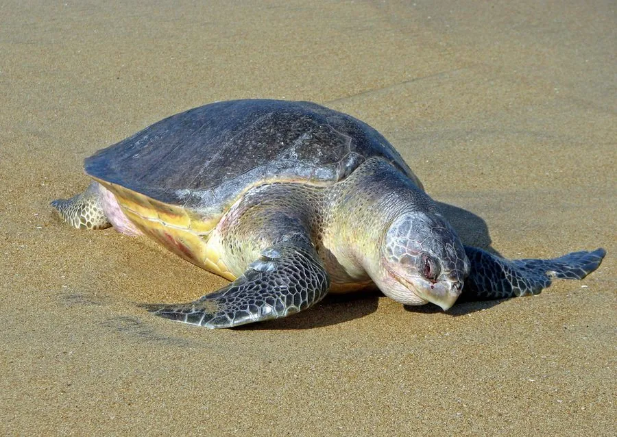

爬行动物 · 动物界
太平洋丽龟 Lepidochelys olivacea

体型最小的海龟之一，背甲呈橄榄绿色，繁殖季成千上万只雌龟集体上岸产卵，场面十分壮观，属国家一级保护动物。
- 分类
- 门脊索动物门纲爬行纲目龟鳖目科海龟科属丽龟属
- 栖息环境
- 热带与亚热带的开阔海域、近岸浅海与珊瑚礁附近
- 地理分布
- 太平洋、印度洋及大西洋的热带和亚热带海域，中国南海有分布
- 保护级别
- IUCN 易危（VU）；中国国家一级保护动物；CITES 附录 I
物种志
太平洋丽龟背甲长 60–70 厘米，体重 30–50 千克，是体型最小的海龟之一。它的背甲呈心形或椭圆形，盾片数量较多，颜色为灰绿或橄榄绿，腹面淡黄；头部略呈三角形，四肢呈桨状，前肢比后肢发达，适合在开阔海域长距离游动。
它分布于全球热带和亚热带海域，主要在太平洋和印度洋活动，以蟹、虾、水母、海鞘和鱼卵为食，常潜入浅海海底觅食。它最著名的是“集体产卵”行为：繁殖季时成千上万只雌龟会在同一片沙滩上同时上岸产卵，每窝约 100 枚，孵化期 45–60 天。由于渔网误捕、龟卵被捡食和沙滩开发，其种群数量下降，被列为易危物种；中国将其列为国家一级保护动物。
形态与习性
- 食性蟹、虾、水母、海鞘和鱼卵
- 体长背甲长 60–70 cm
- 体重约 30–50 kg
- 寿命约 50 年
- 繁殖卵生，每窝约 100 枚，孵化 45–60 天
- 活动节律昼夜均活动，善长距离洄游
- 保护国家一级保护动物，CITES 附录 I
趣味知识
- 太平洋丽龟是体型最小的海龟，背甲长度通常不超过 70 厘米。
- 繁殖季时成千上万只雌龟会同时上岸产卵，这种集体产卵行为是海龟中最壮观的景象之一。
- 它已被列为国家一级保护动物，渔网误捕是其主要威胁之一。